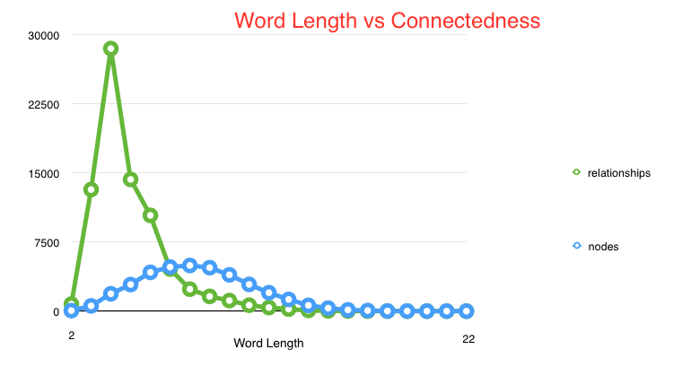

Image courtesy of Wolfram
Single letter change relationships drop off sharply as word length increases.  Cypher query finds paths between words.Image courtesy of Wolfram
Cypher demo JSON API demo (Random) JSON API demo (Specific) iOS App demoshun -> bull